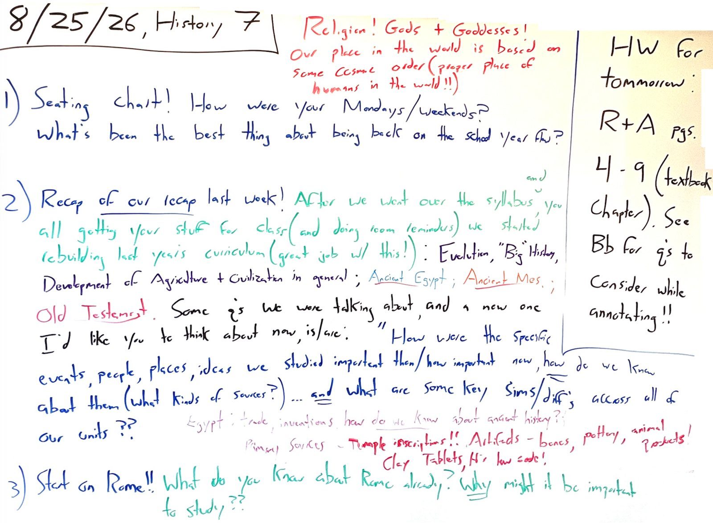
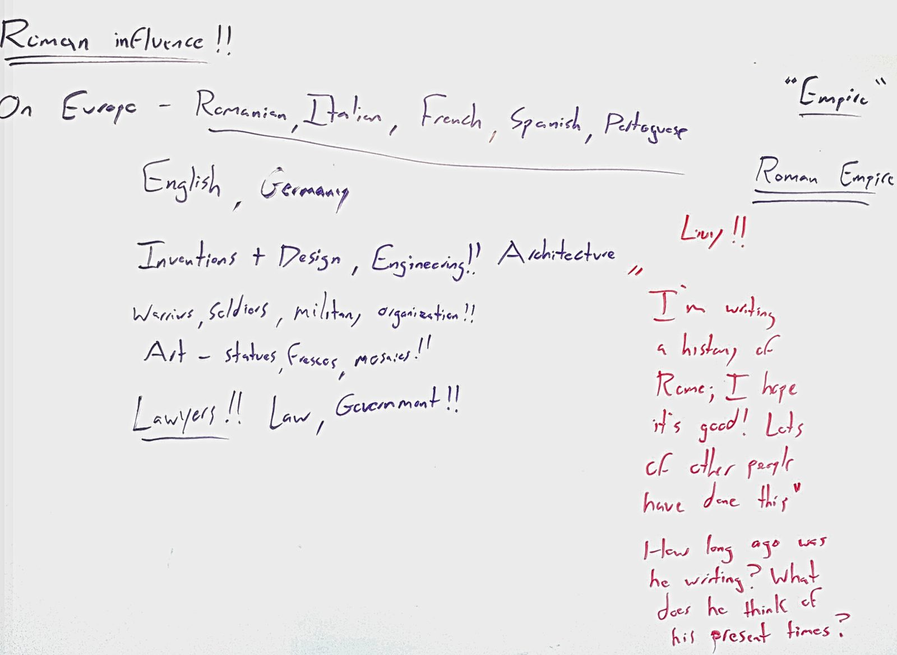

Tuesday, 8/25/26 MOST RECENT CLASS


Summary Of Class
- New seating chart, then we finished Friday's recap: why what we studied was important then, how important now, how we know any of it, and some common themes across all four units.
- Then Rome! You all had a lot of good things to say about why it might be important to study ancient Roman history, and about Roman influence: languages out of Latin, engineering, architecture, art, the military.
- I threw in law and government, since our legal and political systems are very consciously modeled off of Rome.
- Then we started reading the preface to Livy's Early History of Rome, where he lays out his goals for writing, including the ills that have befallen his own times (the early Roman empire) and his hope that studying his nation's past will help pull them out of their ‘present’ state of moral decline.
- Homework: R+A pgs. 4-9.
Homework: due tomorrow!
R+A pgs. 4-9 (textbook chapter).
See Blackbaud for some questions to consider while you're annotating!
Board As Text
8/25/26, History 7
1) Seating chart! How were your Mondays/weekends? What's been the best thing about being back on the school year so far?
2) Recap of our recap last week! After we went over the syllabus, and you all getting your stuff for class (and doing room reminders), we started rebuilding last year's curriculum (great job w/ this!): Evolution, "Big" History, Development of Agriculture + Civilization in general; Ancient Egypt; Ancient Mes.; Old Testament. Some q's we were talking about, and a new one I'd like you to think about now, is/are: "How were the specific events, people, places, ideas we studied important then / how important now, how do we know about them (what kinds of sources?) ... and what are some key sims/diffs across all of our units??
• Egypt: trade, inventions, how do we know about ancient history??
• Primary sources – Temple inscriptions!! Artifacts – bones, pottery, animal products! Clay Tablets, H's law code!
3) Start on Rome!! What do you know about Rome already? Why might it be important to study??
Written up top, in red: Religion! Gods + Goddesses! Our place in the world is based on some cosmic order (proper place of humans in the world!!)
HW for tommorrow: R+A pgs. 4-9 (textbook chapter). See Bb for q's to consider while annotating!!
Second board: Roman influence!!
• On Europe – Romanian, Italian, French, Spanish, Portuguese
• English, Germany
• Inventions + Design, Engineering!! Architecture
• Warriors, Soldiers, military organization!!
• Art – statues, Frescos, mosaics!!
• Lawyers!! Law, Government!!
Right-hand side: "Empire" / Roman Empire / Livy!!
• "I'm writing a history of Rome; I hope it's good! Lots of other people have done this"
• How long ago was he writing? What does he think of his present times?